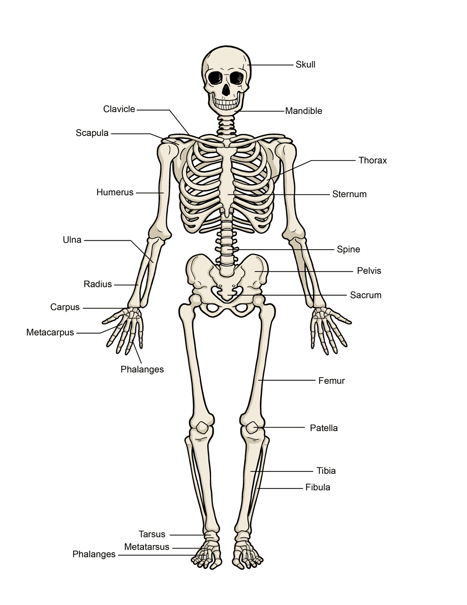
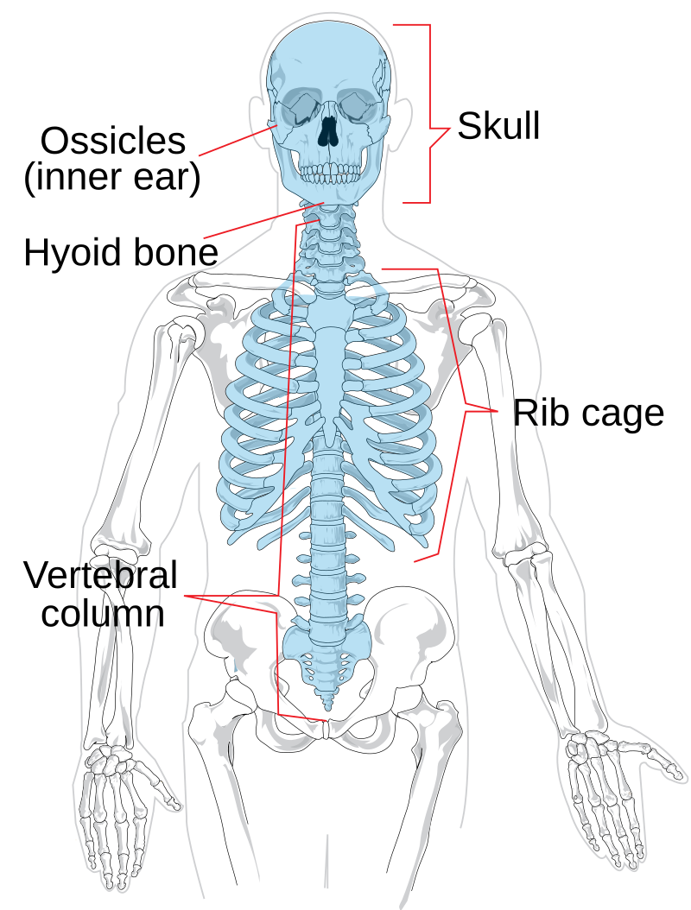
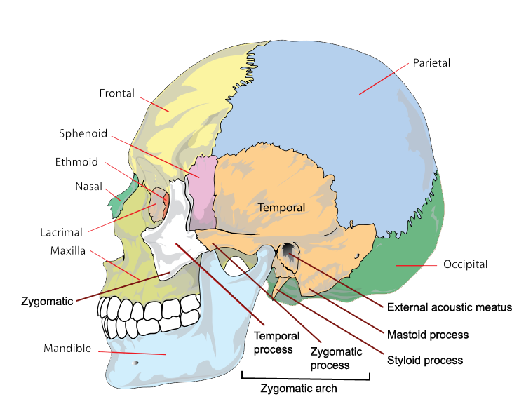
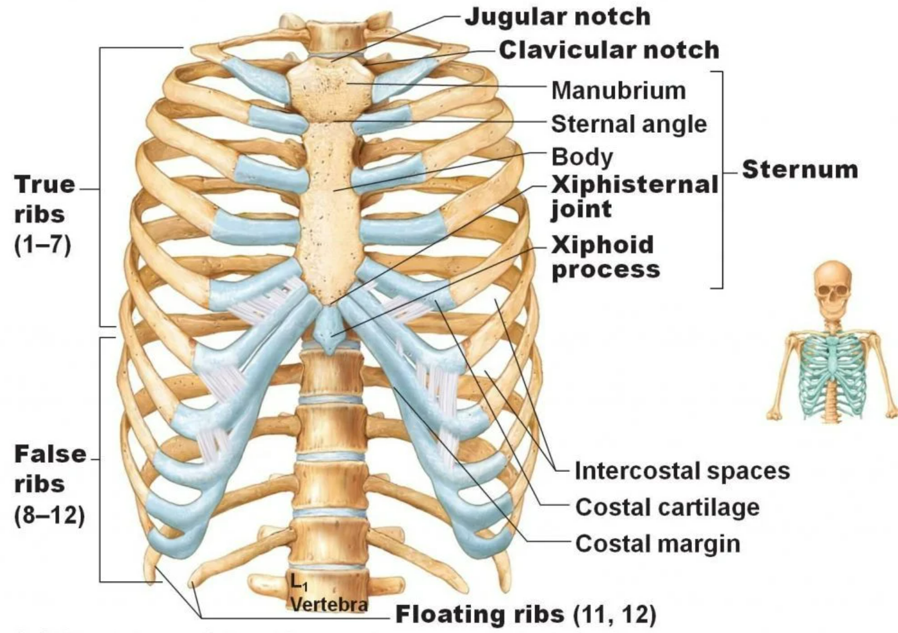

Experiment 2: Identification of Axial Bones
AIM
Identification of axial bones.Requirements
- Human skeleton model- Bones of axial skeleton
References
Goyal RK, Patel NM. Practical Anatomy, Physiology, and Biochemistry. 11th ed. Ahmedabad: B.S. Shah Publishers; 1991.Introduction
The skeleton is the internal framework of bones and cartilage that supports and protects the body, enables movement, and stores minerals.
Parts of the Skeleton
- Bones: Skull, spine, ribs, shoulder blades, collar bones, etc.
- Cartilage: Flexible connective tissue.
- Ligaments and Tendons: Connect bones and muscles.
- Joints: Allow bone movement.

Functions
- Support soft tissues and organs.
- Protect vital organs.
- Enable movement.
- Store minerals (calcium, phosphate).
- Produce blood cells in bone marrow.

Axial Skeleton
The endoskeleton is divided into:
- Axial Skeleton (80 bones): Skull, vertebral column, rib cage, sternum.
- Appendicular Skeleton.
The axial skeleton maintains upright posture and transmits body weight.

Skull
- Cranium (8 bones): Frontal, parietal (2), temporal (2), occipital, sphenoid, ethmoid.
- Ear Ossicles (3): Malleus, incus, stapes.
- Hyoid Bone (1): Supports the throat.
- Facial Bones: Maxilla (2), mandible (1), lacrimal (2), inferior nasal conchae (2), vomer (1), zygomatic (2), nasal bones (2), palatine (2).

Vertebral Column
- Cervical Vertebrae (7): Neck region.
- Thoracic Vertebrae (12): Attach to ribs.
- Lumbar Vertebrae (5): Lower back.
- Sacrum (1): Connects spine to pelvis.
- Coccyx (1): Tailbone.

Sternum
- Flat bone in the chest (manubrium, body, xiphoid process).
Ribs
- 12 pairs:
- True ribs (1–7): Directly attached to sternum.
- False ribs (8–10): Indirectly attached.
- Floating ribs (11–12): Not attached to sternum.
